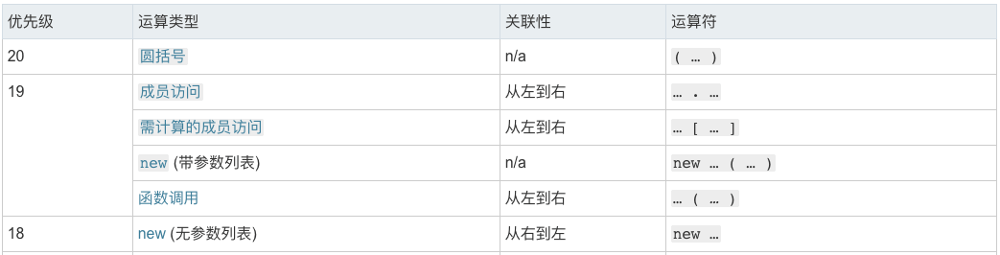

第一题
1 | // 声明一个Foo 函数 |
如果这几个问题能直接回答出来，后面就没必要看了。
简单了解一下 javascript 中的原型继承
1 | function Preson(name) { |
注意下面几点：
- 调用公有方法，公有属性，我们必需先实例化对象，也就是用 new 操作符实化对象，就可构造函数实例化对象的方法和属性，并且公有方法是不能调用私有方法和静态方法的
- 静态方法和静态属性就是我们无需实例化就可以调用
- 而对象的私有方法和属性,外部是不可以访问的
- 静态属性不能被继承
首先看一下代码，如下：
1 | function Foo() {} |
首先看一下Foo.getName会在Foo.prototype.constructor中添加一个getName属性，如果直接调用Foo.getName他就直接调用Foo.prototype.constructor上得getName属性。
如果没有通过new关键字调用Foo的话，是不能访问prototype中的getName属性。
代码结果如下：
第一问
1 | Foo.getName(); // 第一问 |
根据上面的说明，可以得出第一问的Foo.getName就是会访问constructor上得静态属性，结果就是2。
第二问
1 | getName(); // 第二问 |
首先要介绍一下函数声明和函数表达式，如下：
函数声明
1 | // 函数声明 |
函数表达式
1 | // 函数表达式 |
这里考察的是变量提升的技巧，简单来说就是函数声明存在变量提升，不了解变量提升的话可以看另一篇文章javascript 中的变量提升，所以这一题的答案就是 4。
第三问
1 | Foo().getName(); // 第三问 |
Foo().getName(); 先执行了Foo函数，然后调用Foo函数的返回值对象的getName属性函数。主要考察this指向问题和在Foo函数中没有var声明变量问题。
要注意Foo函数中的getName声明是没有var的，所以它会在全局作用域中创建一个getName，如果全局作用域中存在这个属性就会覆盖全局作用域的已存在的属性。
所以当Foo函数执行完成之后getName = function () { console.log(1);}会覆盖getName = function () { console.log(4); }。
注意：此处若依然没有找到会一直向上查找到 window 对象，若 window 对象中也没有 getName 属性，就在 window 对象中创建一个 getName 变量。
Foo函数的返回值是this，而JS的this问题已经有非常多的文章介绍，简单来讲 this 的指向就是由函数的调用方式决定的。
所以答案就是输出 1。
这里最主要考察两个知识点，一个是作用域问题、一个是 this 指向问题，这个就不多做解释直接看往期文章。
第四问
1 | getName(); // 第四问 |
直接调用getName函数，相当于window.getName()，因为这个变量已经被Foo函数执行时修改了，所以结果和第三问相同也会输出 1。
第五问
1 | new Foo.getName(); // 第五问 |
第五问主要考察的是JS中的运算符优先级，所以首先要了解JS 中的运算符优先级，可以通过MDN 运算符优先级学习这里就不多展示，只展示用到的如下图所示：

可以在上面看到一下两点：
- 成员访问
.的优先级为(19)比 new 无参数列表(18)优先级高 - 当点运算完后又因为有个括号()，此时就是变成 new 有参数列表(19)，所以直接执行 new，
new constructor后面可以跟一个指定对象实例的类型的类或函数。它是把Foo.getName()看做一个整体，而不是调用了new完成以后的函数，不信的话可以运行new (Foo.getName)这个代码，它的结果和本题的结果一致。
所以我们可以把代码改写成new (Foo.getName)()这样可以清晰的看到他的执行顺序，大的执行顺序分为两部步如下：
- 先执行
Foo.getName - 再是
new (Foo.getName)()
所以这里实际上将getName 函数作为了构造函数来执行，所以结果是 2。
第六问
1 | new Foo().getName(); // 第六问 |
根据上面的运算符优先级可知，首先 new 有参数列表(19)跟点的优先级(19)是同级，同级的话按照从左向右的执行顺序，所以先执行 new 有参数列表(19)再执行点的优先级(19)，最后再函数调用(18)。
new 有参数列表(19)->.成员访问(19)->()函数调用(18)
根据优先级可以把上面的问题该写为(new Foo()).getName()，这样可以更清晰的看到它的执行过程。
构造函数的返回值
在传统语言中构造函数不应该有返回值，实际执行的返回值就是此构造函数的实例化对象，而在 JS 中构造函数可以有返回值也可以没有。大致可以分总结为三类：
- 没有返回值则按照其他语言一样返回实例化对象。
- 若有返回值则检查其返回值是否为引用类型。如果是非引用类型，如基本类型（String,Number,Boolean,Null,Undefined）则与无返回值相同，实际返回其实例化对象。
- 若返回值是引用类型，则实际返回值为这个引用类型。
原题中，由于返回的是this，而 this 在构造函数中本来就代表当前实例化对象，最终Foo函数返回实例化对象。
之后调用实例化对象的getName函数，因为在 Foo 构造函数中没有为实例化对象添加任何属性，当前对象的原型对象(prototype)中寻找getName函数。所以会执行prototype上得getName的方法也就是function () { alert (3);};，结果为 3。
第七问
1 | new new Foo().getName(); // 第七问 |
根据第六问的优先级可以把第七问的代码改写为new ((new Foo()).getName)()，所以得到的结果也为 3。
总结
其实有很多关于this 指向、构造函数返回值、作用域都没有记录的很完整，以前有些过一些文章但是并没有整理，慢慢会整理好。